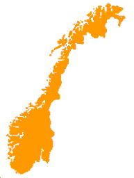

Places in Norway

This little website is built to serve as a demonstration of some WXT mechanismes. The theme is simply "places in Norway". The selection of places is more or less random.
The styling is rather simple. The intention has been to make it distinct, not pretty.
B. Stenseth
Thursday, July 8, 2010
The template used for all pages:
The script for this site: